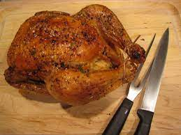

Damn Good Roast Chicken

Description
This chicken is about as simple as it gets, and all the better for it.
Seasoned simply with plenty of salt and fresh-ground pepper, the chicken is juicy with a crisp skin,
and is best enjoyed with dijon mustard. Make sure to pour that chicken fat with its drippings onto each serving.
Try to use the highest quality chicken you can get get your hands on. This recipe highlights rather than adulterates
the flavor of the bird, and it simply is not the same with factory-farmed poultry. A bird that had ate good and
had a good life tastes best.
Ingredients
- 2-4lb chicken
- Enough kosher salt to liberally coat chicken, approximately 3 tbsp
- Freshly ground black pepper
Directions
- Preheat the oven as high as it goes, 450-500F.
- Using paper towels, firmly pat the bird dry. Make sure to dry the cavity as well as the skin outside.
Any moisture left on the surface will cause the chicken to steam initially instead of roasting, resulting
in skin that is less crispy. Dry well.
- Sprinkle all sides of the chicken generously with salt and pepper, as well as the interior of the cavity.
- Truss the chicken simply by tying the two drumsticks together by the protruding bones. Tuck the wingtips
behind the wing joint.
- Place the chicken breast up in a cast iron skillet and place it in the oven.
- Begin to check the chicken's temperature with a thermometer at about 45 minutes. When it reaches 150F at the
deepest part of the breast, remove it from the oven and tent with foil. Allow the chicken to rest for at least 10 minutes.
- Carve and serve with mustard and a fresh green salad, giving each serving a generous spoonful of pan drippings.